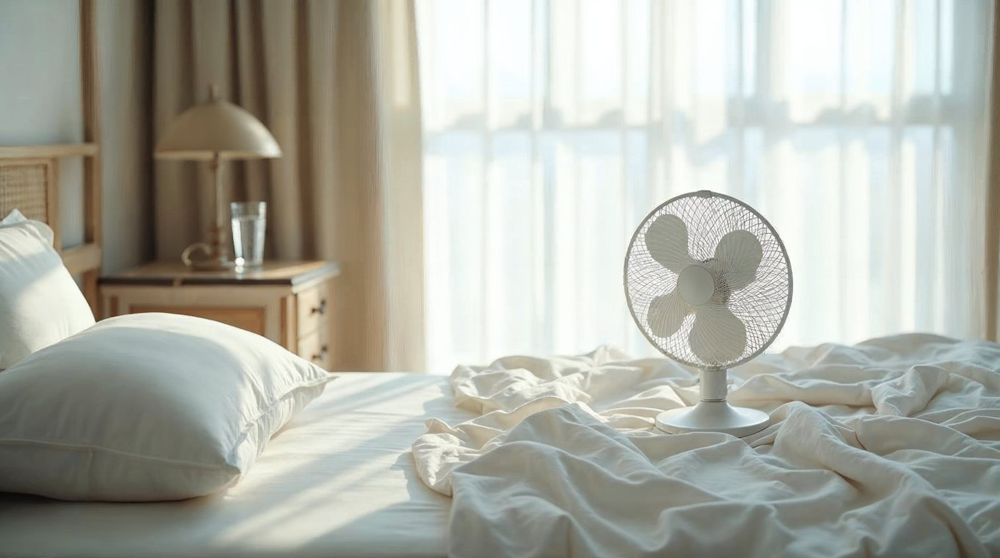
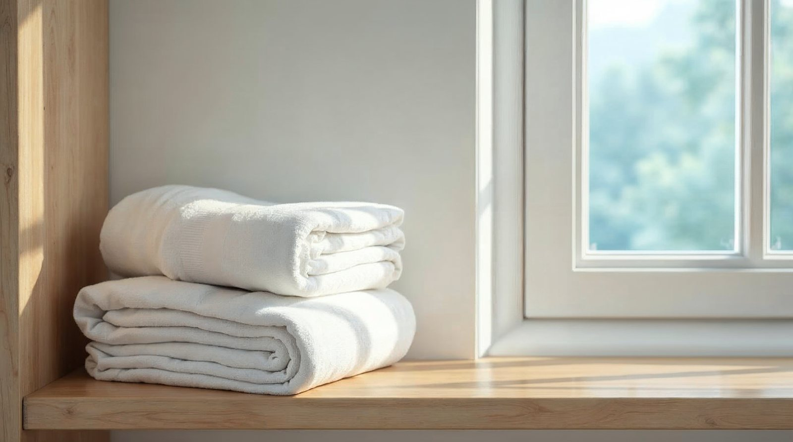
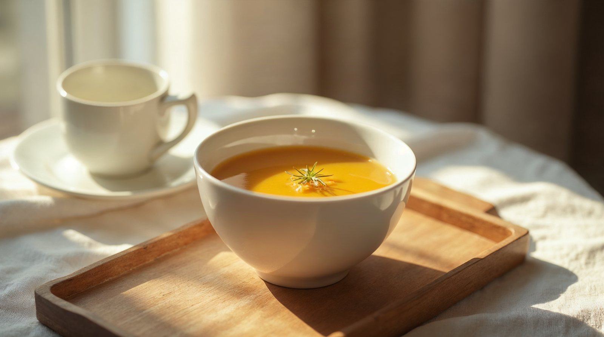
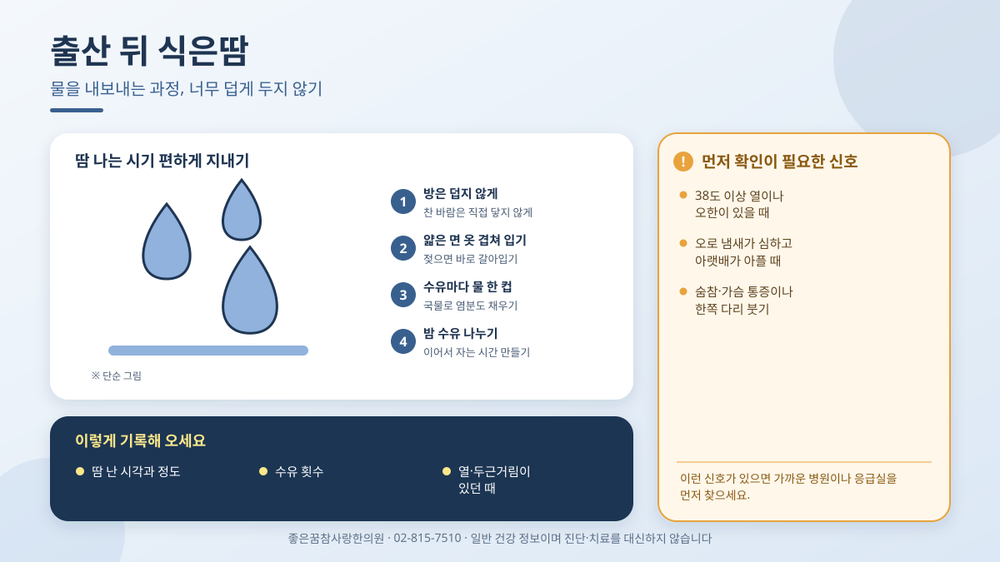

이종호 한의사 감수좋은꿈참사랑한의원 대표원장 (한의사 면허번호 19769)발행 2026-11-26 · 수정 2026-11-27
이 글의 차례
새벽 수유를 마치고 다시 누웠는데 등이 축축합니다. 잠옷을 갈아입고 겨우 잠들었다가 깨어 보니 베개까지 젖어 있어요. 방이 덥지도 않은데 이렇게 땀이 나는 게 정상인지, 몸이 많이 약해진 건 아닌지 걱정이 밀려옵니다. 산후조리원에서도, 집에 돌아와서도 이 땀은 한동안 이어지죠.
진료실에서 출산하신 분들이 자주 꺼내시는 얘기예요. 어른들은 산후에 땀을 많이 흘려야 한다며 더 따뜻하게 하라고 하시고, 인터넷에서는 땀이 많으면 몸이 허해진 거라는 글도 보여요. 어느 말을 따라야 할지 헷갈리신다고 하세요.
먼저 안심하셔도 돼요. 출산 뒤 몇 주 동안 땀이 많이 나는 건 흔한 일이에요. 원래 그래요. 임신 동안 몸에 쌓였던 물을 내보내고, 크게 달라진 호르몬에 몸이 적응하는 과정이거든요. 아홉 달 동안 늘려 놓은 살림을 다시 정리하는 시기라고 생각하시면 돼요.
다만 '지나가는 땀'과 '살펴봐야 하는 땀'은 다른 얘기예요. 땀이 너무 오래가거나 다른 신호가 함께 있다면 따로 살펴볼 필요가 있어요.
이 글에서는 산후 식은땀이 왜 생기는지, 지나가는 땀과 확인이 필요한 땀을 어떻게 나누는지, 방 온도와 옷, 물과 잠을 어떻게 챙기면 좋은지, 그리고 한의원에서 함께 살피는 부분을 차례로 말씀드릴게요.

산후 식은땀은 어떤 모습인가요?
산후 땀은 주로 밤에 자는 동안 많이 납니다. 자고 일어나면 목덜미와 등, 가슴이 축축하고 잠옷이나 베개가 젖어 있는 경우가 흔합니다. 낮에도 수유하거나 아기를 안고 있을 때 땀이 확 솟는 느낌을 받으시기도 합니다.
땀과 함께 소변량이 부쩍 늘었다고 느끼시는 분도 많습니다. 이것도 몸에 머물던 물을 내보내는 과정의 일부입니다. 출산 직후 퉁퉁 부었던 손발과 얼굴의 부기가 이 시기에 조금씩 빠지는 것도 같은 흐름입니다.
대부분 출산하고 첫 몇 주 동안 가장 많고, 그 뒤로 서서히 줄어듭니다. 수유를 하고 계신다면 수유하는 동안 땀이 조금 더 이어지기도 합니다.
왜 출산 뒤에 땀이 이렇게 많이 날까요
임신 동안 몸은 아기와 태반을 위해 평소보다 훨씬 많은 혈액과 물을 품고 있습니다. 출산을 하고 나면 이 물이 더는 필요하지 않아서, 몸은 소변과 땀으로 넘치는 물을 내보냅니다. 산후 땀의 가장 큰 이유가 바로 이것입니다.
호르몬의 변화도 큰 몫을 합니다. 임신 동안 높게 유지되던 여성 호르몬이 출산 뒤 짧은 시간에 크게 떨어지면, 몸의 온도를 맞추는 조절이 잠시 흔들립니다. 갱년기에 열감과 땀이 생기는 것과 비슷한 원리라고 생각하시면 이해가 쉽습니다.
여기에 밤중 수유로 잠이 자주 끊기고, 아기를 돌보며 긴장이 이어지고, 출산으로 기운이 많이 빠진 상태가 겹치면 땀이 더 쉽게 납니다. 그래서 산후 땀은 몸이 회복하며 균형을 되찾아 가는 과정으로 이해하시면 됩니다.
너무 따뜻하게 하면 오히려 힘들어집니다
산후에는 찬 바람을 쐬면 안 된다며 한여름에도 두꺼운 이불을 덮고 보일러를 세게 트는 경우가 있습니다. 찬 바람을 직접 맞지 않는 것은 좋지만, 지나치게 덥게 지내면 땀이 더 많이 나고, 젖은 옷이 식으면서 오히려 몸이 차가워질 수 있습니다.
방은 덥지도 춥지도 않은 온도로 맞추고, 습도도 적당히 유지하시는 것이 좋습니다. 땀이 많이 나는 시기에는 두꺼운 옷 한 벌보다 얇고 땀을 잘 흡수하는 면 옷을 겹쳐 입고, 젖으면 바로 갈아입는 쪽이 몸을 편안하게 지켜 줍니다.
땀을 흘려야 몸이 풀린다는 생각에 일부러 땀을 내는 것은 권하지 않습니다. 땀을 많이 흘리면 몸의 물과 기운이 함께 빠져서 오히려 더 지치기 쉽습니다.
지나가는 땀과 확인이 필요한 땀
대부분의 산후 땀은 시간이 지나며 줄어듭니다. 하지만 아래와 같은 모습이 함께 있다면 출산한 병원이나 내과에서 확인을 받아 보시는 것이 좋습니다.
- 출산하고 몇 달이 지났는데도 땀이 줄지 않거나 오히려 늘어나는 경우
- 열이 나거나 오한이 들며 땀이 나는 경우
- 가슴이 두근거리고 손이 떨리며 체중이 빠르게 줄어드는 경우
- 한쪽 가슴이 붉고 단단하게 붓고 아픈 경우
- 기분이 크게 가라앉거나 불안이 심해 잠을 이루기 어려운 경우
출산 뒤 몇 달 사이에 갑상선 기능이 잠시 흔들리는 경우가 있습니다. 두근거림, 손 떨림, 체중 감소, 예민함이 땀과 함께 있다면 혈액 검사로 확인해 볼 수 있습니다.
수유와 땀은 어떤 관계가 있나요?
수유를 하면 젖을 만드는 호르몬이 나오면서 몸이 따뜻해지고 땀이 날 수 있습니다. 수유하는 동안 얼굴과 가슴이 화끈거리며 땀이 솟는다는 분이 많습니다. 아기를 품에 안고 있어 체온이 더해지는 것도 한몫합니다.
수유 중에는 젖으로도 물이 빠져나가기 때문에, 땀까지 많이 나면 목이 마르고 소변이 진해지기 쉽습니다. 수유할 때마다 물 한 컵을 곁에 두고 마시는 습관을 들이시면 좋습니다. 수유할 때 등을 기대고 어깨 힘을 빼면 몸의 긴장과 열감이 조금 덜합니다.
수유를 마치고 나면 땀이 줄어드는 경우가 많습니다. 다만 수유를 줄이거나 끊는 시기에도 호르몬이 다시 바뀌면서 잠시 땀이 늘 수 있으니 너무 걱정하지 않으셔도 됩니다.
잠과 마음도 함께 봅니다
밤중 수유로 잠이 조각나면 몸의 온도 조절이 더 쉽게 흔들립니다. 짧게 자고 깨기를 반복하면 깰 때마다 땀이 나 있는 것처럼 느껴지기도 합니다. 가족과 밤 수유를 나눌 수 있다면 몇 시간이라도 이어서 자는 시간을 만들어 보세요.
산후에는 마음도 크게 흔들립니다. 아기를 잘 돌보고 있는지, 몸이 예전으로 돌아갈 수 있을지 걱정이 많아지면 긴장으로 땀이 더 나기도 합니다. 이유 없이 눈물이 나고 불안한 날이 2주 넘게 이어진다면 산후 우울도 함께 살펴보는 것이 좋습니다.
제왕절개를 하셨다면
제왕절개로 출산하셨다면 땀이 수술 부위에 고이지 않도록 조금 더 신경 써 주세요. 상처 주변이 땀으로 오래 젖어 있으면 짓무르거나 가려울 수 있습니다. 부드러운 면 속옷을 입고, 땀이 나면 가볍게 두드려 말려 주시는 것이 좋습니다.
수술 뒤 회복 과정에서 진통제나 다른 약을 드시고 있다면 땀과 잠에 영향을 줄 수 있어 진료 때 함께 알려 주세요. 상처 부위가 붉게 붓거나 진물이 나면 출산한 병원에 먼저 보여 주셔야 합니다.

계절에 따라 달라지는 산후 땀
여름에 출산하셨다면 더위와 산후 땀이 겹쳐 훨씬 힘드실 수 있습니다. 이때는 찬 바람이 몸에 직접 닿지 않게 하면서 방 온도를 적당히 낮추고, 땀띠가 생기기 쉬운 목과 겨드랑이, 가슴 아래를 자주 살펴 주세요.
겨울에는 난방을 세게 하고 두꺼운 이불을 덮다 보니 밤에 땀이 더 나기 쉽습니다. 실내가 건조해지면 목과 피부가 마르기도 하니 가습기나 젖은 수건으로 습도를 맞춰 주시면 좋습니다. 땀에 젖은 채 찬 바깥 공기를 쐬지 않도록 외출 전 옷을 한 번 확인해 주세요.
피부와 머리카락도 함께 살펴 주세요
땀이 많이 나는 시기에는 피부가 쉽게 짓무르고 땀띠나 가려움이 생길 수 있습니다. 미지근한 물로 짧게 씻고 바로 물기를 말린 뒤 순한 보습제를 발라 주세요. 젖은 옷을 오래 입고 있지 않는 것이 가장 좋은 예방입니다.
출산하고 몇 달 뒤에는 머리카락이 한 움큼씩 빠지는 시기가 찾아오기도 합니다. 땀과 마찬가지로 호르몬이 제자리를 찾아가는 과정에서 생기는 경우가 많으니, 두피를 깨끗하고 시원하게 유지하며 지켜봐 주세요.
가족이 도울 수 있는 것
산후 땀은 본인보다 곁에 있는 가족이 먼저 알아차리기도 합니다. 밤에 젖은 잠옷과 베개를 바꿔 주고, 수유할 때 물을 챙겨 드리는 것만으로도 큰 도움이 됩니다.
어른들께서 더 따뜻하게 하라고 하실 때는, 땀이 너무 많이 나면 오히려 몸이 식을 수 있다는 이야기를 가족이 함께 전해 드리면 좋습니다. 산모가 혼자 설명하기보다 가족이 함께 나서 주시면 마음이 한결 가벼워집니다.

땀을 많이 흘린 뒤 기운이 빠질 때
땀을 많이 흘린 날에는 몸이 축 처지고 어지러운 느낌이 들 수 있습니다. 땀과 함께 물과 염분이 빠져나가기 때문입니다. 물만 드시기보다 미역국이나 맑은 국처럼 따뜻한 국물을 함께 드시면 몸이 한결 편안해집니다.
산후에는 출혈과 수유로 철분이 부족해지기도 쉽습니다. 땀과 함께 숨이 차고 얼굴이 창백하며 쉽게 어지럽다면 빈혈이 있는지 출산한 병원에서 확인해 보세요. 고기, 달걀, 푸른 채소를 고루 드시는 것도 도움이 됩니다.
먼저 이렇게 여쭙니다
처음 오시면 대략 이런 순서로 여쭙니다. 미리 떠올려 오시면 이야기가 수월해집니다.
- 출산하신 지 얼마나 되었고, 자연분만이었나요 제왕절개였나요?
- 땀은 주로 언제, 몸의 어느 부위에 많이 나나요?
- 수유를 하고 계신가요? 하루 몇 번 정도인가요?
- 열이나 오한, 두근거림, 손 떨림이 있으신가요?
- 오로의 양과 색, 냄새는 어떠신가요?
- 밤에 이어서 자는 시간은 얼마나 되나요?
모든 것을 정확히 기억하지 못하셔도 괜찮습니다. 아기를 돌보며 오시는 길이니, 생각나는 대로 말씀해 주시면 함께 정리해 갑니다. 가족이 함께 오셔서 거들어 주셔도 좋습니다.
일상에서 먼저 해 볼 수 있는 것
- 방 온도는 덥지 않게, 찬 바람이 직접 닿지 않게 맞추기
- 얇은 면 옷을 겹쳐 입고 젖으면 바로 갈아입기
- 베개 위에 수건을 깔아 두고 젖으면 바꾸기
- 수유할 때마다 물 한 컵씩 마시기
- 미지근한 물로 짧게 씻고 바로 물기 말리기
- 가족과 밤 수유를 나눠 이어서 자는 시간 만들기
땀이 많이 나는 시기에는 몸이 쉽게 지칩니다. 끼니를 거르지 마시고, 국이나 죽처럼 따뜻하고 부드러운 음식으로 기운을 채워 주세요. 맵고 기름진 음식은 땀을 더 늘릴 수 있어 조금 줄이시는 편이 좋습니다.
아기를 안고 있는 시간이 길다면 틈틈이 어깨와 손목을 풀어 주세요. 몸이 굳고 긴장하면 땀이 더 쉽게 납니다. 아기가 잠든 사이 잠깐이라도 함께 눈을 붙이는 것이 회복에 도움이 됩니다. 집안일은 미뤄 두셔도 괜찮습니다.
한의원에서 함께 살필 수 있는 경우
- 출산하고 시간이 지나도 땀이 줄지 않고 기운이 많이 떨어진 경우
- 조금만 움직여도 땀이 나고 숨이 차며 쉽게 지치는 경우
- 땀이 난 뒤 몸이 으슬으슬 차고 관절이 시린 경우
- 잠이 얕고 자주 깨며 땀 때문에 다시 잠들기 어려운 경우
- 입맛이 없고 소화가 더디며 몸이 무거운 경우
좋은꿈참사랑한의원에서는 맥을 짚고 잠, 소화, 대소변, 손발 온도를 여쭌 뒤 땀이 나는 모습과 기운의 상태를 함께 살핍니다. 진찰한 내용을 바탕으로 침, 온열 관리, 한약 상담 가운데 지금 상태에 맞는 것을 함께 정합니다.
한약을 상의할 때는 수유 중이신지, 드시는 약과 영양제가 무엇인지 모두 확인하고 신중하게 정합니다. 출산한 병원에서 받은 약은 상의 없이 멈추지 않으시도록 안내합니다.
이렇게 기록해 오시면 상담이 쉬워집니다
일주일 정도 간단히 적어 오시면 땀의 흐름과 몸 상태를 함께 보기 쉽습니다.
- 땀이 난 시각과 정도(옷을 갈아입었는지)
- 수유한 시각과 횟수
- 이어서 잔 시간과 밤에 깬 횟수
- 열, 두근거림, 오한이 있었던 때
- 물 마신 양과 소변 색
기록이 어렵다면 휴대폰 메모에 한 줄씩만 남겨도 충분합니다. 산후 검진 때 받은 결과지나 출산한 병원의 퇴원 안내문도 함께 가져와 주시면 이야기를 이어 가기 쉽습니다. 몇 날을 나란히 놓고 보면 땀이 줄어드는 흐름이 보여 마음이 한결 놓이실 수 있습니다.
몸이 제자리를 찾아가는 시간
출산 뒤의 땀은 아홉 달 동안 아기를 품었던 몸이 다시 원래 자리로 돌아가는 과정에서 생겨요. 대부분은 시간이 지나며 줄어들고, 그 사이 몸을 편안하게 지켜 주는 게 가장 중요해요. 땀이 난다고 몸이 약해졌다고 자책하지 않으셔도 돼요.
아기를 돌보느라 내 몸은 맨 뒤로 밀리기 쉬운 때예요. 그래서 저는 해야 할 목록을 길게 드리지 않아요. 기운과 잠을 살피는 건 제가 맡을게요. 대신 하나만 부탁드려요. 수유할 때 물 한 컵을 곁에 두고 같이 드세요. 딴 건 하시던 대로 편하게 하셔도 돼요. 베개 위에 수건 한 장 깔아 두는 것 정도는 덤으로 해 두시면 밤에 덜 번거로우실 거예요.
땀을 내야 한다고 방을 덥게 하실 필요는 없어요. 엄마가 편한 온도가 아기에게도 편한 경우가 많거든요.
다음에 오시면 일주일 동안의 기록을 함께 펼쳐 보며 그다음 걸음을 같이 정할게요. 궁금한 건 그냥 편하게 물어보세요.
이런 증상은 먼저 확인이 필요합니다
- 38도 이상의 열이나 오한이 있고 오로 냄새가 심해지거나 아랫배가 아픈 경우
- 갑자기 숨이 차고 가슴이 아프거나 한쪽 다리가 붓고 아픈 경우
이런 신호가 있으면 한의원보다 가까운 병원이나 응급실을 먼저 찾으세요.
함께 읽으면 좋은 글
- 출산 뒤 몸 회복, 관절·땀·잠·기분은 무엇부터 살피나요?
- 출산 뒤 얼굴과 손발이 퉁퉁 붓는 산후 부기는 언제까지 가고, 어떻게 살피나요?
- 자고 일어나면 베개와 잠옷이 젖어 있는 밤 식은땀(도한)은 어떻게 살피나요?
- 출산 뒤 우울감과 불안이 몇 주째 이어질 때(산후 우울)는 어떻게 살피나요?
- 갱년기에 밤마다 땀에 젖어 깨는 날이 많을 때는 어떻게 하나요?

여쭙는 것
- 출산하신 지 얼마나 되었고, 자연분만이었나요 제왕절개였나요?
- 땀은 주로 언제, 몸의 어느 부위에 많이 나나요?
- 수유를 하고 계신가요? 하루 몇 번 정도인가요?
생활에서 해 볼 것
- 방 온도는 덥지 않게, 찬 바람이 직접 닿지 않게 맞추기
- 얇은 면 옷을 겹쳐 입고 젖으면 바로 갈아입기
- 베개 위에 수건을 깔아 두고 젖으면 바꾸기
한의원에서 함께 살필 것
- 출산하고 시간이 지나도 땀이 줄지 않고 기운이 많이 떨어진 경우
- 조금만 움직여도 땀이 나고 숨이 차며 쉽게 지치는 경우
- 땀이 난 뒤 몸이 으슬으슬 차고 관절이 시린 경우
먼저 확인이 필요한 신호
- 38도 이상의 열이나 오한이 있고 오로 냄새가 심해지거나 아랫배가 아픈 경우
- 갑자기 숨이 차고 가슴이 아프거나 한쪽 다리가 붓고 아픈 경우
한눈에 보는 표
| 구분 | 핵심 |
|---|---|
| 여쭙는 것 | 출산하신 지 얼마나 되었고, 자연분만이었나요 제왕절개였나요? 땀은 주로 언제, 몸의 어느 부위에 많이 나나요? |
| 생활에서 해 볼 것 | 방 온도는 덥지 않게, 찬 바람이 직접 닿지 않게 맞추기 얇은 면 옷을 겹쳐 입고 젖으면 바로 갈아입기 |
| 한의원에서 함께 살필 것 | 출산하고 시간이 지나도 땀이 줄지 않고 기운이 많이 떨어진 경우 조금만 움직여도 땀이 나고 숨이 차며 쉽게 지치는 경우 |
| 먼저 확인이 필요한 신호 | 38도 이상의 열이나 오한이 있고 오로 냄새가 심해지거나 아랫배가 아픈 경우 갑자기 숨이 차고 가슴이 아프거나 한쪽 다리가 붓고 아픈 경우 |
자주 묻는 질문
산후에는 땀을 많이 흘려야 몸이 잘 풀린다는데 사실인가요?
출산 뒤 땀은 몸이 물을 내보내며 자연스럽게 나는 것이지, 일부러 땀을 내야 하는 것은 아닙니다. 너무 덥게 지내면 오히려 기운이 빠지고 젖은 옷 때문에 몸이 식을 수 있습니다.
산후 땀은 보통 언제까지 이어지나요?
대개 출산하고 첫 몇 주 동안 가장 많고 서서히 줄어듭니다. 수유 중이라면 조금 더 이어질 수 있고, 몇 달이 지나도 줄지 않으면 확인을 받아 보세요.
수유 중인데 한약을 먹어도 되나요?
수유 중이시라는 것을 먼저 알려 주시면 드시는 약과 함께 확인해 신중하게 정합니다. 필요하면 출산한 병원이나 소아청소년과와 상의하시도록 안내합니다.
땀이 많이 나는데 에어컨이나 선풍기를 써도 되나요?
찬 바람이 몸에 직접 닿지 않게 하면서 방 온도를 적당히 낮추는 것은 괜찮습니다. 바람의 방향을 벽 쪽으로 돌리고, 젖은 옷은 바로 갈아입으세요.
산후 땀과 산후풍은 관련이 있나요?
땀을 흘린 뒤 젖은 옷이 식으며 몸이 차가워지면 관절이 시리게 느껴질 수 있습니다. 땀이 나면 바로 닦고 갈아입어 몸을 편안한 온도로 지켜 주시는 것이 좋습니다.
좋은꿈참사랑한의원은 재진 때 지난번 이야기부터 이어서 여쭙니다. 진료시간과 예약은 오시는 길에서 확인하세요.
어디서 상담받을 수 있나요?
좋은꿈참사랑한의원은 서울 동작구 만양로2길 2 신성빌딩 3층·5층(서울 동작구 상도동, 7호선 상도역 3번 출구 근처)에 있습니다. 한의사 3명(이종호 대표원장, 조영기 수석진료원장, 정원영 진료원장)이 진료합니다. 진료시간은 평일 09:30~20:00(점심 13:00~14:00), 토·일·공휴일 09:30~15:00이며, 방문 전 전화로 확인을 권합니다. 예약은 네이버 예약, 카카오톡 상담, 전화 02-815-7510로 받습니다.
이 글은 일반적인 건강 정보이며 개인의 진단이나 치료를 대신하지 않습니다. 증상이 있거나 복용 중인 약이 있다면 진료를 통해 확인하세요. 치료 효과는 개인마다 다를 수 있습니다.
작성 기준: 일반적으로 알려져 있는 건강 정보를 참고해 정리했습니다(대표원장 감수). 증상 기록은 1~2주 동안 하루 1회, 비슷한 시간에 적어 오시면 지난 상태와 비교하기 쉽습니다.